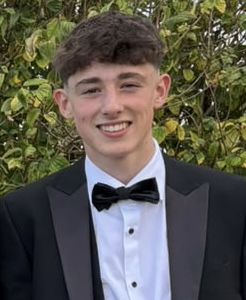
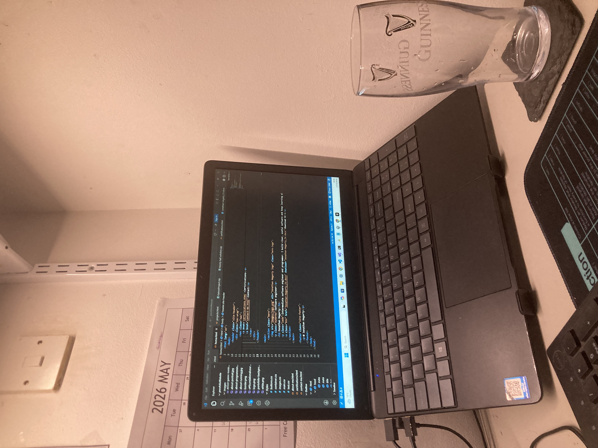
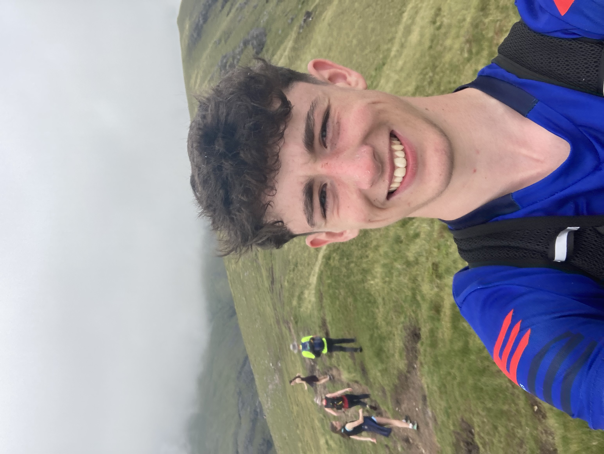
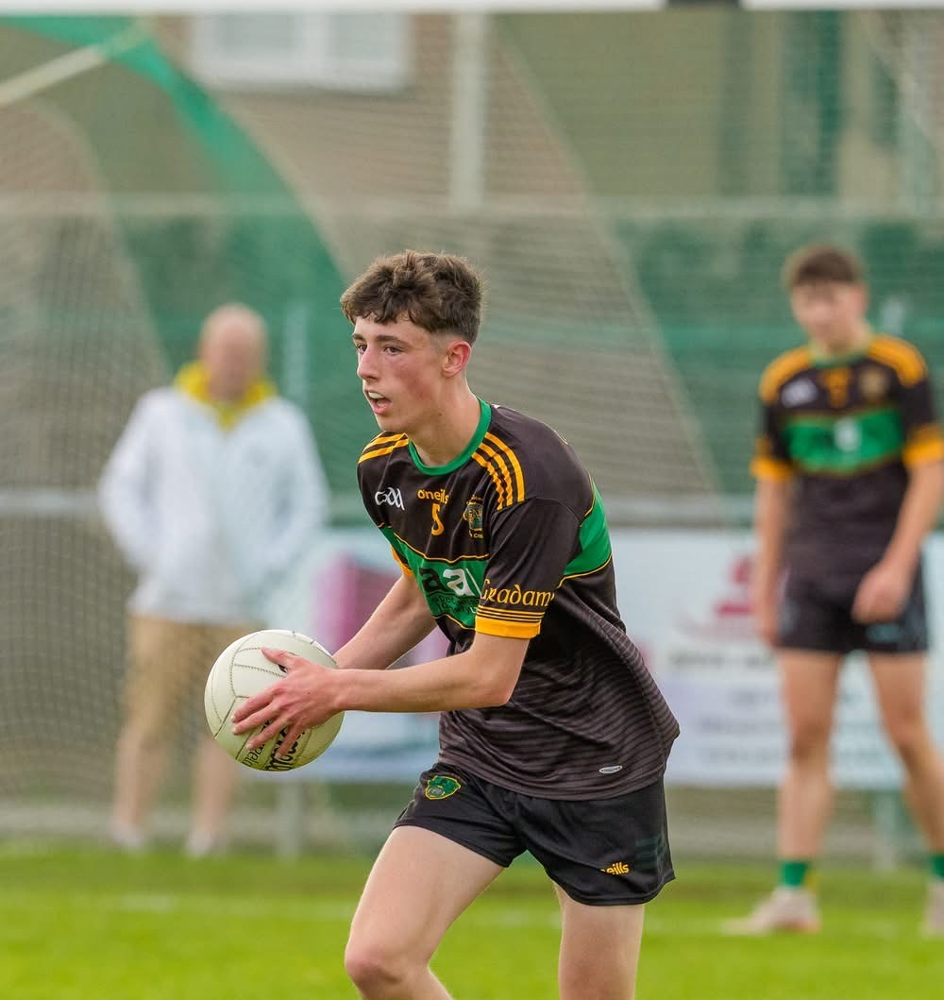
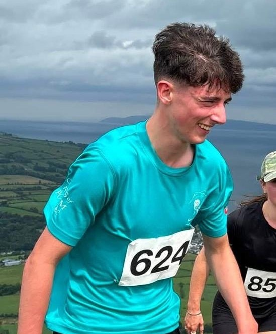

About
A few things about me

I fell in love with programming at an early age. What started as curiosity — taking things apart, trying small scripts, and seeing an idea appear on a screen — quickly became the way I liked to spend my time. I still get the same feeling now: a problem, a quiet stretch of focus, and the satisfaction of making something work.
That early interest grew into a path as an intermediate software engineer. I care about writing software that is clear, useful, and built with care. Outside of code, I try to keep the same discipline and curiosity in the rest of my life.
Away from the keyboard I am usually outdoors. Mountain climbing is a hobby I return to whenever I can — long days, steep ground, and a view that makes the effort worthwhile. I also play Gaelic football, which keeps me competitive, part of a team, and grounded in a sport I have always enjoyed. Running sits alongside both: a simple way to stay fit, clear my head, and keep moving.
Life outside work

Programming
An early love of making things with code that still drives the work I do today.

Mountain climbing
Climbed the highest mountain from each province, with my family to keep fit.

Gaelic football
A team sport I have played and followed for years — fast, physical, and communal.

Running
Early mornings and quiet roads + mountain runs on occassion. A habit that keeps me sharp for everything else.